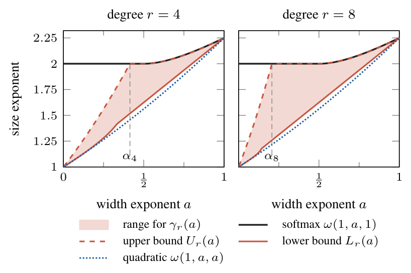
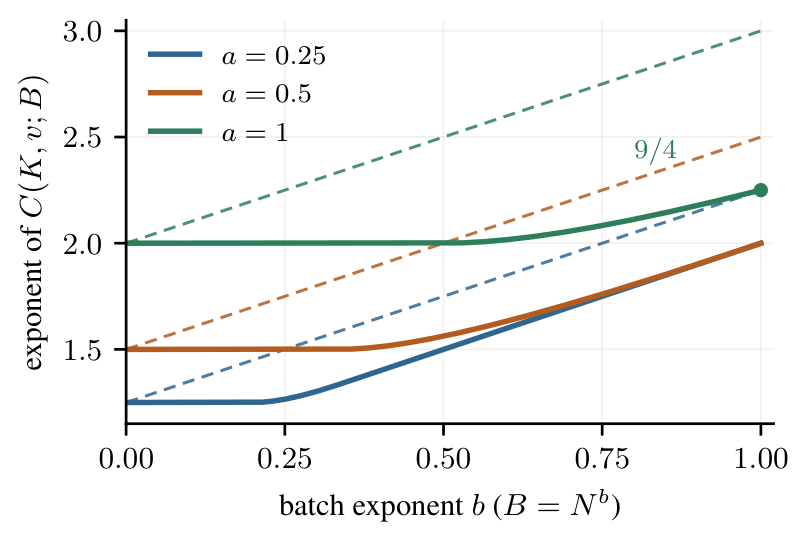
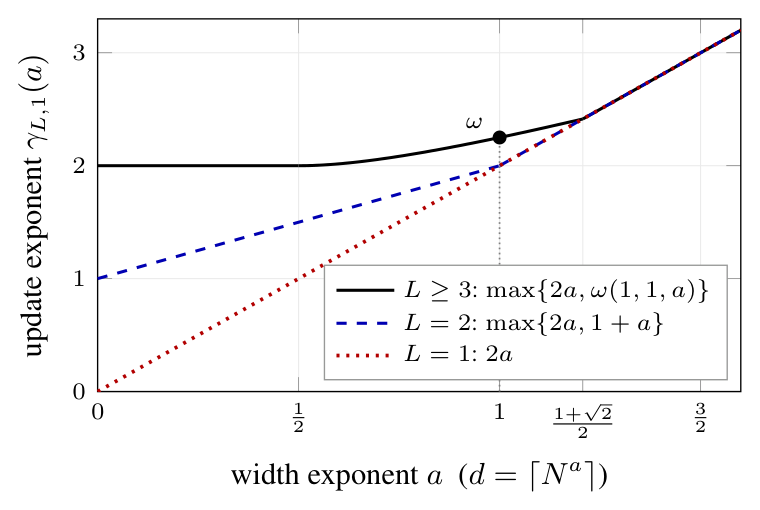
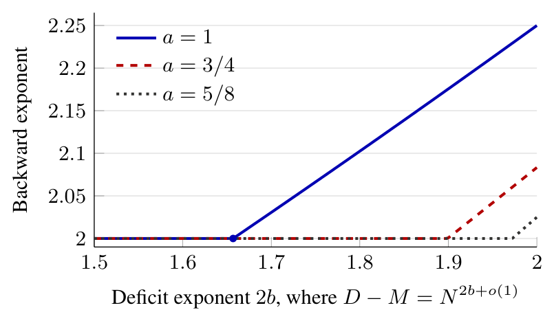
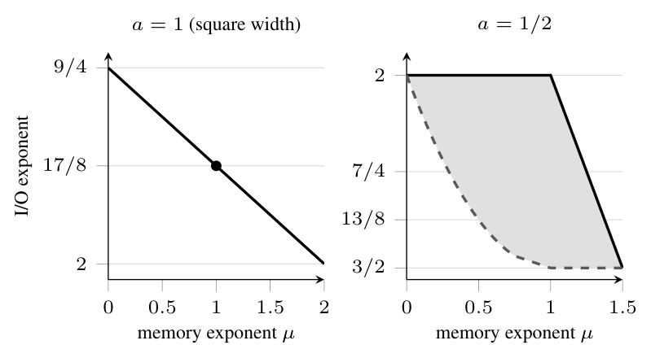
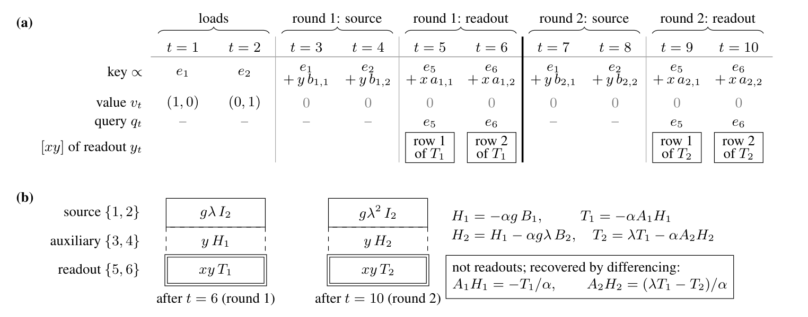

When Is Matrix Multiplication Unavoidable?
Arithmetic Complexity of Attention, Learning, and Verification
Which problems inherit the cost of matrix multiplication without returning the product? When can that cost be avoided?
These papers study exact computation and approximation in attention, prediction, verification, and learning. They trace how the cost changes with the kernel, precision, available information, and resource being counted.
Research map
Which tasks inherit the cost of matrix multiplication, and when can it be avoided?
Research themes and papers
Attention Kernels and Precision
How do the scoring kernel and the required precision change the arithmetic cost of attention?
-
Matrix Multiplication Lower Bounds for Strassen Attention and a Faster Algorithm for Tensor Attention
In exact real arithmetic circuits with exponential and logarithm gates, normalized Strassen attention has the square matrix multiplication exponent for widths up to the sequence length, including width one. For tensor attention, a crossing identity gives an algorithm whose numerical speedups use the stated rectangular exponent formula.

-
The Arithmetic Complexity of Exact Polynomial Attention
For exact normalized quadratic Taylor attention at width with fixed 0 < a ≤ 1, the arithmetic exponent is , even with exponential and logarithm gates. For higher fixed even Taylor degrees, polynomial selectors give degree-dependent lower bounds.

-
The Arithmetic Cost of Precision in One-Channel Softmax Attention
For one-channel softmax on the full coordinate cube with unscaled scores, square-width extended arithmetic circuits have exponent two when the worst-case absolute error stays below a fixed constant less than one and the number of accuracy bits is subpolynomial. The square matrix multiplication exponent is recovered at an explicitly doubly exponentially small error. The intervening complexity remains open.


Computational Resource Tradeoffs
What can be saved by preparing data in advance, keeping intermediate values, or moving fewer words?
-
Preprocessed Softmax Attention Is as Hard as Matrix Multiplication
Even with unrestricted cache preprocessing, exact real arithmetic circuits with exponential and logarithm gates require work for one query, for almost every key matrix and every nonconstant scalar value vector. At fixed power-law batch sizes and widths, the batched exponent is the corresponding rectangular matrix multiplication exponent. Sequential online queries pay the single-query cost in each round.

-
Exact Transformer Cache Updates Are as Hard as Matrix Multiplication
For causal attention-only Transformers, even after arbitrary preprocessing of context and weights, one scalar edit can make an exact cache update in extended arithmetic circuits cost the square matrix multiplication exponent at three layers and width proportional to sequence length. At square width, one or two layers admit quadratic work for one edit.

-
Memory–Recomputation Tradeoffs for Exact Attention Backpropagation
Determines the backward exponent for the exact value gradient in circuits with arithmetic, exponential, and logarithm gates, when an uncharged forward circuit stores at most M reals from the queries and keys. At width , if the budget leaves a deficit relative to storing every independent score difference, the work exponent is . Recomputing a square block attains this exponent.

-
On the Unrestricted I/O Complexity of Exact Softmax Attention
For one-channel exact softmax at square width, fixed read/write schedules with unrestricted recomputation have a lower bound of word transfers, where M is the fast-memory size and is at most on the order of the square of the sequence length. A blocked algorithm matches it up to subpolynomial factors when memory grows as a fixed power of the sequence length. The lower bound uses a tensor inequality derived from OpenAI's spectral theory, and the upper bound uses the reported rectangular exponents.



Learning and Recurrence
When inputs share structure or outputs are aggregated, which independent products still determine the work?
-
The Arithmetic Complexity of Batched Delta-Rule Readouts
For exact batched delta-rule readouts at , with value channels sharing keys, queries, and gates for fixed , the optimal work exponent is . It evaluates to under the stated rectangular exponent formula. The lower bound applies at any depth.

-
The Arithmetic Complexity of Exact Per-Example Gradient Clipping
For a single linear layer, exact clipped gradient aggregation in real computation trees with square roots and comparisons costs, up to subpolynomial factors, the larger of one batched matrix product and a family of independent per-example products.


Connections across themes
What small outputs can reveal
The Top-1 lower bound extracts a bilinear map from sign tests. Ridge prediction extracts a product from a polynomial associated with a single prediction, and product verification uses an accepting path. Each argument exploits a different property of the output.
What can be shared
Joint queries can share arithmetic even when cache preprocessing leaves the single-query exponent unchanged. Batched delta-rule readouts and gradient clipping both recover families of independent products, from shared recurrence parameters and from clipped aggregation, respectively.
Where the cost can fall
The polynomial attention and precision papers alter the kernel and the error tolerance, respectively. Attention I/O keeps the exact softmax task and changes the resource counted to word transfers.
Research background
- The anonymous manuscript Exact Softmax Attention Has the Rectangular Matrix-Multiplication Exponent in Extended Arithmetic Circuits establishes a lower bound for exact attention even with a single scalar value per key. Its exp–log span theorem is used in the analysis of attention I/O.
- The OpenAI square-exponent preprint reports a square matrix multiplication exponent of 9/4. The attention I/O paper derives a tensor inequality from that work's spectral theory.
- The accompanying square and rectangular exponent results are used where a paper specializes a symbolic bound to numerical exponents. The papers state the assumptions behind those specializations.